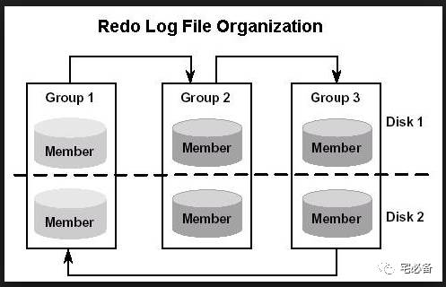
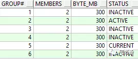
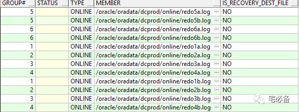
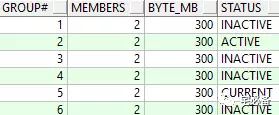

Redo Log的相关操作
这个专题主要是一些日常运维中需要用到的命令，不定期更新~~
这节内容为我在日常运维中用到的关于redo log方面的命令

1. 查看Redo Log状态
SELECT group#, members, bytes/1024/1024 byte_mb, status FROM v$log;

SELECT *FROM v$logfile;

2. 增加日志组
SQL>ALTER DATABASE ADD LOGFILE GROUP 4 ('D:\ORACLE\PRODUCT\10.2.0\ORADATA\HRDB\redo04a.log' ,'D:\ORACLE\PRODUCT\10.2.0\ORADATA\HRDB\redo04b.log') SIZE 300M;
SQL>ALTER DATABASE ADD LOGFILE GROUP 5 ('D:\ORACLE\PRODUCT\10.2.0\ORADATA\HRDB\redo05a.log' ,'D:\ORACLE\PRODUCT\10.2.0\ORADATA\HRDB\redo05b.log') SIZE 300M;
SQL>ALTER DATABASE ADD LOGFILE GROUP 6 ('D:\ORACLE\PRODUCT\10.2.0\ORADATA\HRDB\redo06a.log' ,'D:\ORACLE\PRODUCT\10.2.0\ORADATA\HRDB\redo06b.log') SIZE 300M;
3. 删除日志组
3.1 切换Redo Log 使原来的inactive
SQL>ALTER SYSTEM SWITCH LOGFILE;
SQL>ALTER SYSTEM CHECKPOINT ;

3.2 删除不需要的日志组
当日志组为INACTIVE时即可删除
SQL>ALTER DATABASE DROP LOGFILE GROUP 3 ;
4. 查看日志切换频率
column h0 format 999
column h1 format 999
column h2 format 999
column h3 format 999
column h4 format 999
column h5 format 999
column h6 format 999
column h7 format 999
column h8 format 999
column h9 format 999
column h10 format 999
column h11 format 999
column h12 format 999
column h13 format 999
column h14 format 999
column h15 format 999
column h16 format 999
column h17 format 999
column h18 format 999
column h19 format 999
column h20 format 999
column h21 format 999
column h22 format 999
column h23 format 999
column avg format 999.99
column day format a6
SELECT TRUNC (first_time) "Date", TO_CHAR (first_time, 'Dy') "Day", COUNT (1) "Total",
SUM (DECODE (TO_CHAR (first_time, 'hh24'), '00', 1, 0)) h0,
SUM (DECODE (TO_CHAR (first_time, 'hh24'), '01', 1, 0)) "h1",
SUM (DECODE (TO_CHAR (first_time, 'hh24'), '02', 1, 0)) "h2",
SUM (DECODE (TO_CHAR (first_time, 'hh24'), '03', 1, 0)) "h3",
SUM (DECODE (TO_CHAR (first_time, 'hh24'), '04', 1, 0)) "h4",
SUM (DECODE (TO_CHAR (first_time, 'hh24'), '05', 1, 0)) "h5",
SUM (DECODE (TO_CHAR (first_time, 'hh24'), '06', 1, 0)) "h6",
SUM (DECODE (TO_CHAR (first_time, 'hh24'), '07', 1, 0)) "h7",
SUM (DECODE (TO_CHAR (first_time, 'hh24'), '08', 1, 0)) "h8",
SUM (DECODE (TO_CHAR (first_time, 'hh24'), '09', 1, 0)) "h9",
SUM (DECODE (TO_CHAR (first_time, 'hh24'), '10', 1, 0)) "h10",
SUM (DECODE (TO_CHAR (first_time, 'hh24'), '11', 1, 0)) "h11",
SUM (DECODE (TO_CHAR (first_time, 'hh24'), '12', 1, 0)) "h12",
SUM (DECODE (TO_CHAR (first_time, 'hh24'), '13', 1, 0)) "h13",
SUM (DECODE (TO_CHAR (first_time, 'hh24'), '14', 1, 0)) "h14",
SUM (DECODE (TO_CHAR (first_time, 'hh24'), '15', 1, 0)) "h15",
SUM (DECODE (TO_CHAR (first_time, 'hh24'), '16', 1, 0)) "h16",
SUM (DECODE (TO_CHAR (first_time, 'hh24'), '17', 1, 0)) "h17",
SUM (DECODE (TO_CHAR (first_time, 'hh24'), '18', 1, 0)) "h18",
SUM (DECODE (TO_CHAR (first_time, 'hh24'), '19', 1, 0)) "h19",
SUM (DECODE (TO_CHAR (first_time, 'hh24'), '20', 1, 0)) "h20",
SUM (DECODE (TO_CHAR (first_time, 'hh24'), '21', 1, 0)) "h21",
SUM (DECODE (TO_CHAR (first_time, 'hh24'), '22', 1, 0)) "h22",
SUM (DECODE (TO_CHAR (first_time, 'hh24'), '23', 1, 0)) "h23", ROUND (COUNT (1) / 24, 2) "Avg"
FROM gv$log_history
WHERE first_time >= trunc(SYSDATE) - 68
and thread# = inst_id
GROUP BY TRUNC (first_time), TO_CHAR (first_time, 'Dy')
ORDER BY 1 DESC;